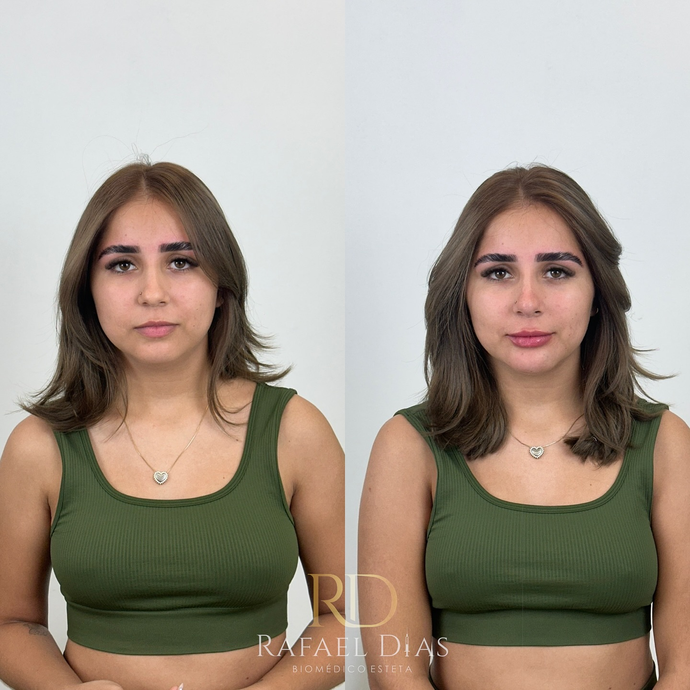
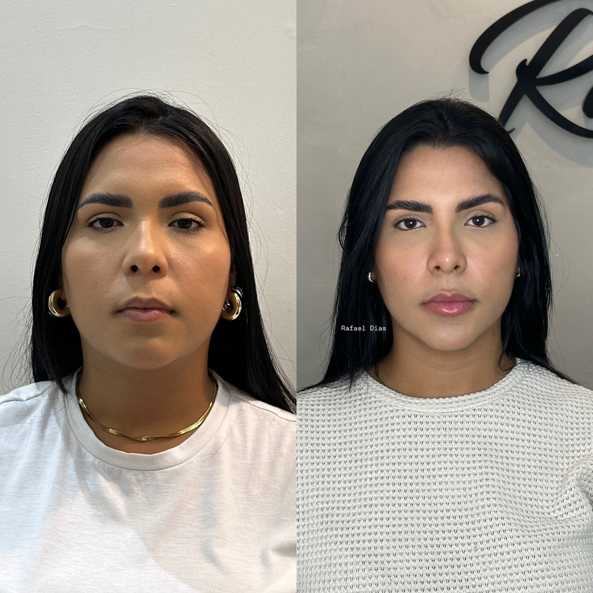
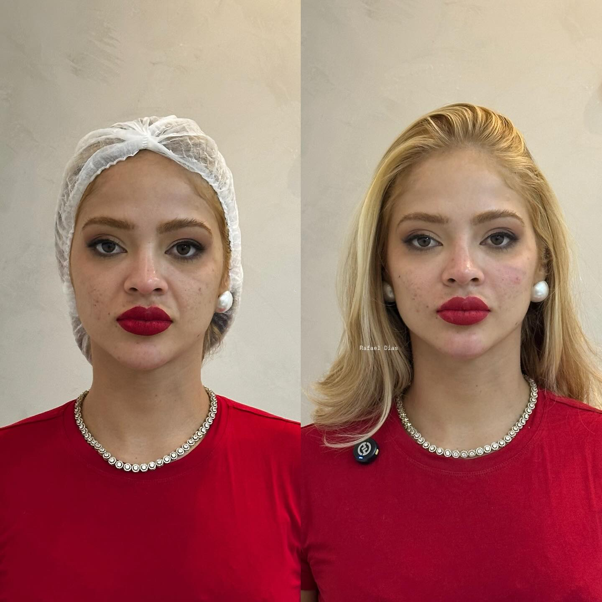
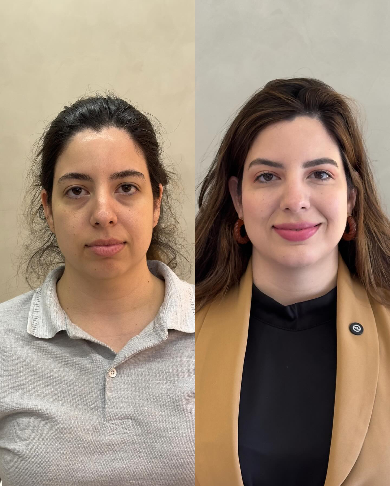
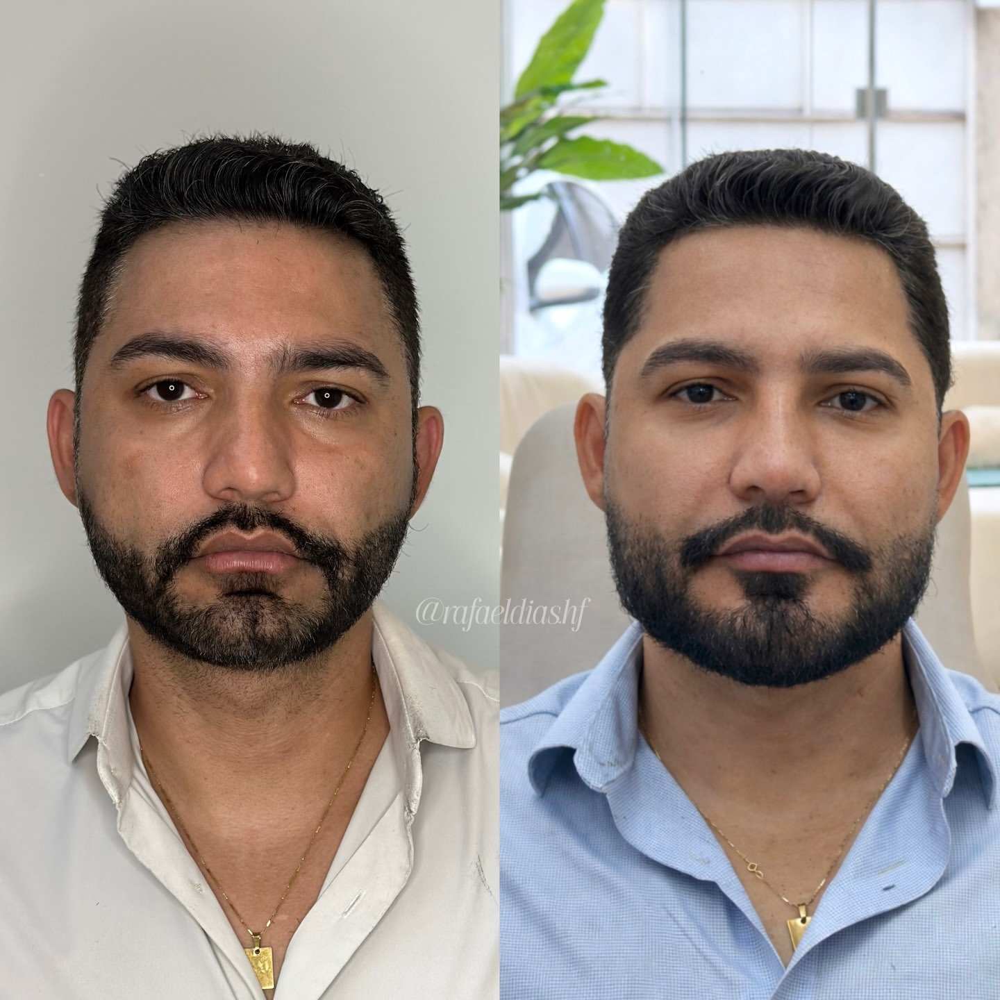

Full Face em Parauapebas
Harmonização Full Face para valorizar o que já é seu.
O equilíbrio entre os traços, a proporção do rosto e o que você deseja mudar orientam cada etapa da avaliação e do procedimento.
Casos clínicos
Cada rosto pede uma combinação diferente.
Veja casos de full face com objetivos distintos. As imagens ajudam a conhecer o trabalho, mas não antecipam o resultado de um futuro procedimento.





Arraste para explorar os casos
Dr. Rafael Dias. Imagens de casos clínicos publicadas no perfil profissional. Cada caso é único e os resultados podem variar.
Relato após o full face
Fazer o Full Face foi uma das melhores decisões da minha vida.
Depoimento espontâneo publicado no perfil profissional do Dr. Rafael Dias. A experiência e a recuperação variam de pessoa para pessoa.
Experiência cirúrgica — desde 2006
desde2006
Experiência aplicada à harmonização do rosto.
Na consulta, o Dr. Rafael Dias examina o rosto como um todo, ouve o que incomoda e explica o que pode — e o que não pode — ser alcançado com o procedimento.
Quem realiza o full face
Dr. Rafael Dias
Especialista em harmonização facial, com atuação em procedimentos estéticos e reparadores da face.
Na avaliação para full face, o Dr. Rafael Dias considera as proporções do rosto, a harmonia entre as estruturas e a mudança desejada pelo paciente. A proposta é discutida com clareza, incluindo limites, cuidados e etapas da recuperação.
Como o procedimento é definido
O full face começa na avaliação.
Não existe um rosto padrão. O plano depende do exame presencial, da anatomia facial e do que o paciente busca mudar.
- 01 Exame do rosto e das proporções faciais
- 02 Definição das mudanças possíveis
- 03 Orientações para o procedimento e recuperação
Quer saber se o full face faz sentido para o seu caso?
Fale com a equipe para consultar horários e receber as informações da avaliação com o Dr. Rafael Dias.
Atendimento em Parauapebas · Pará